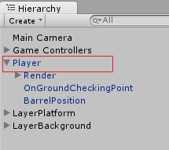
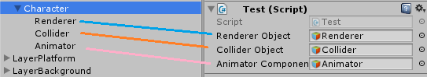
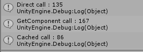
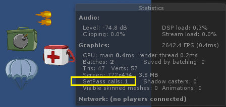
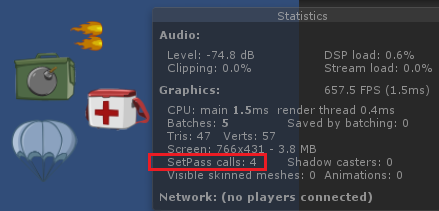

[Unity3D] Things you often see in online demos, but it's best not to use them
1. Divine Object.Find () statement
This API is too familiar, so everyone knows, you can read it here. Its use is to find GameObject on the scene parameter is the name of the object.For example, here, I want to "get" the Player object:


The mentality of a newcomer to Unity is usually "father UI, so strong !! It is fast and convenient.
Where's the bad API?
- In general, the script above it is "tied up" to the scene, is not usable again, because if the other scene has no object with the name "Player" then it is.
- This is a "heavy" API, and the amount of objects in the scene increases, which means running this api slowly. I used to work with a guy, specializing in this api in Update (), turning on the profiler always felt pretty bad for that script.
- Designer is a setup scene, no one will know that they have to name the object in the game exactly as you did in the script.
Alternative solution ?
Actually the source of this API is to solve the problem: hook up, save "reference" to objects in the scene to handle, this is a perpetual problem when making games with Unity.
- Using a GameObject field in the script and dragging and dropping in the Inspector is also a good solution. Each object in the scene has a unique and unique ID (if anyone opens the scene file with notepad), in this way, the script will store the ID to the object, reference to the object that will be loaded when Unity loads the scene.
- If you need a better solution for "Communication" between objects in the game, or try ObserverPattern.

2. Set heavy tasks in Update () function
Sometimes people can see the GetComponent (), RayCast () ... functions set in Update (), FixedUpdate (). These are quite heavy tasks, often slowing down the game. It's best to cache all reusable components, and then use them in Update (). This dish is sure many people met in the article "Best Practice" online

Speaking again and again, there are also cases where we have to put LineCast, RayCast in Update () or FixedUpdate (), this is normal, generally try to limit it well, add conditions or check Look carefully at LayerMask.
[UPDATE]
Someone asked me about the performance of direct transform and the Transform cache again, this also has many threads on the network that have test, I do it again. Here is the code to test:
using UnityEngine;
using System.Collections;
using System.Diagnostics;
using Debug = UnityEngine.Debug;
public class TestCacheComponentPerformance : MonoBehaviour
{
/// Will use for Loop test in Update
[SerializeField] int runCount = 100000;
/// Use for Editor testing, change the runCount, and press this bool
/// in Inspector to run the test again
[SerializeField] bool test = false;
void Update ()
{
if (test)
{
RunTest();
test = false;
}
}
void RunTest()
{
Stopwatch watch = new Stopwatch();
var cacheTransform = transform;
// test direct transform
watch.Start();
for (int m = 0; m < runCount; m++)
{
transform.position = Vector3.zero;
}
watch.Stop();
Debug.Log("Direct call : " + watch.ElapsedMilliseconds);
watch.Reset();
// test getcomponent
watch.Start();
for (int m = 0; m < runCount; m++)
{
GetComponent
}
watch.Stop();
Debug.Log("GetComponent call : " + watch.ElapsedMilliseconds);
watch.Reset();
// test cache
watch.Start();
for (int m = 0; m < runCount; m++)
{
cacheTransform.position = Vector3.zero;
}
watch.Stop();
Debug.Log("Cached call : " + watch.ElapsedMilliseconds);
watch.Reset();
}
}
I do this on a simple PC configuration:
CPU : i3-3210 @3.2 GHZ
RAM : endless =)))
This results (loop 1 million call (1 000 000)), the time unit is milisecond

3. Work with the parameters of Animator without defining const strings for optimization
-
It is also not good to use string dynamically in C #, fragmentation is easy, fragmentation must be done by allocating continuously. For optimization, easy to edit maintenance, you should:
- Define uses frequently used const strings instead of hardcode
- You can define [SerializeField] fields in the script to edit in Inspector
- If you have more hands, write code Editor to read the parameters in the Animator 😉

I personally use [SerializeField] to edit AnimatorParameterName in Inspector, because during the process, these parameters are often changed, not put in code. 😉
4. Using Resources.Load () too much
-
Resources.Load () is also a common API when reading demos related to changing skins, loading some assets at runtime. In general, the main purpose of this API is to: reduce the load of assets loaded on RAM, load only the assets needed at runtime, not load them all at once when launching the application. Some things related to Resources such as:
- Classify the skin of the character, only load the necessary skins in the gam
- Change the texture, model for the in-game object at runtime
- Load some data as xml, json, sql ... runtime
- ….v..v…

-
A few notes when using this API:
- This is also a heavy API, which can "snatch" the frame if you call it halfway through the game.
- All Sprite placed in Resources folder will NOT BE PACK by SpritePacker !! As I mentioned above, the resources in Resources folder will remain the same, Unity doesn't encrypt anything in this, and so does textures and sprites. This is the main reason why people put character skin types in Resources often increasing the drawcall in the game. As shown below, I have an example for 2 cases when I use and do not use the Resources folder to contain sprite (drawcall is 1 vs 4):


Saying that doesn't mean completely cutting the use of this API. Above I have mentioned above some uses and some disadvantages of it, depending on which project to use;). You can read more at Unity Learning page for more tips about this Resources folder. Notice, the first sentence in Unity Learning page, they write this: Best Practices for the Resources System: Don’t use it. Great concept zé hé, also do not indulge in using this Resource too much.
5. Which variable in the script is also public
Unity has a strength that allows people to edit public variables in scripts. It is also from that that almost every dev put public for all variables, functions in the script. This is not good, breaking the principles of opening and closing, interface ... in OOP design. Instead, use the [SerializeField] attribute which also allows you to edit the script variables in the Inspector Window. Should use this way